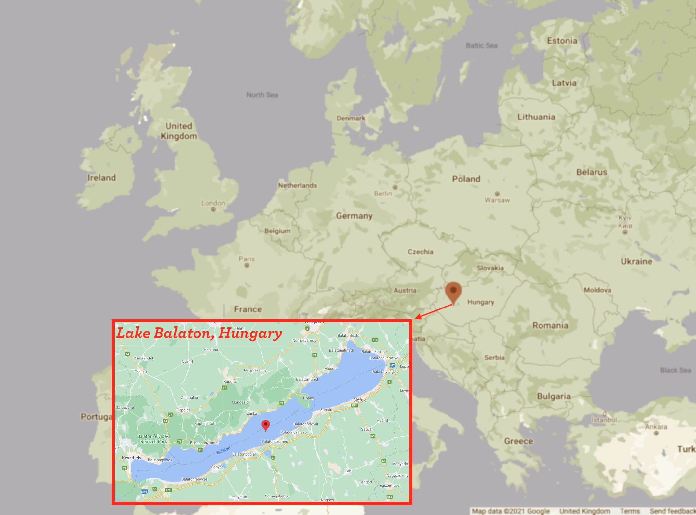

S1Z Lab 5
1 Welcome to Lab 5
1.1 Learning Outcomes
By the end of this computer lab you should be able to:
- Use R to produce plots of report quality.
- Use R to produce autocorrelation function plots.
- Use R to perform differencing.
- Interpret R output for linear models to describe linear trends and seasonal patterns.
- Plot and interpret spatial data in R.
1.2 Introduction
In today's lab, we will use R to explore temporal patterns in lake surface water temperature (LSWT) at Lake Balaton in Hungary.

Figure 1.1: Balaton lake, in Hungary, is the largest lake in Central Europe with a surface area of 600 km\(^2\). Image source: GoogleMaps
We will work through two examples together and then you can produce a similar set of analyses for an alternative lake as a Group Exercise at the end of the Lab.
1.3 Getting Started
Firstly, make sure you have the geoR package installed and loaded in the R environment.
Next, you should download the dataset LakeBalaton.csv from the course Moodle page, and set the working directory to where your dataset is saved. Lake surface water temperature for this lake is available in the .csv file LakeBalaton.csv now stored into your working directory. To open this data file in R you can use the read.csv function as shown below. This will assign the data to the object balaton.
install.packages("geoR")
library(geoR)
# modify this code
setwd("path to where the LakeBalaton.csv file is!")
balaton <- read.csv("LakeBalaton.csv")